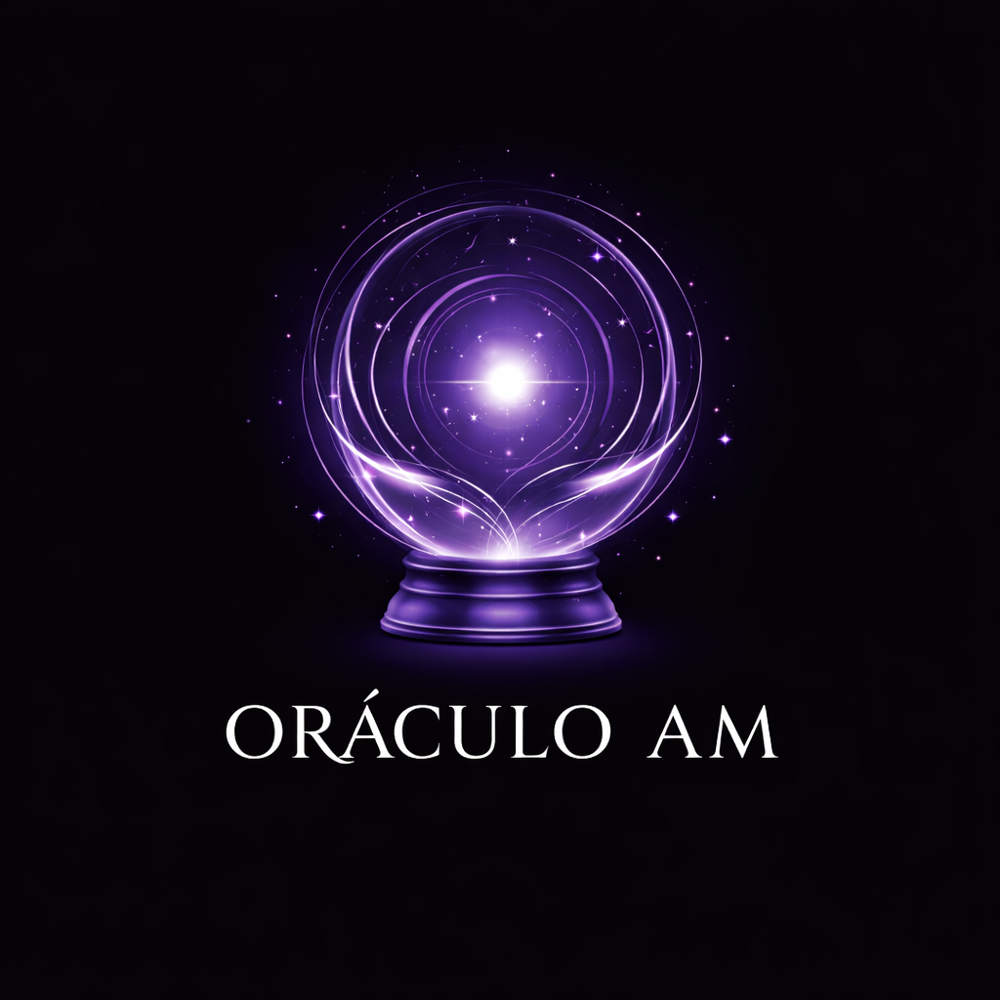

Oráculo AM
Anima Mundi
Respira.
Conecta.
Consulta.
No busques la respuesta que deseas.
Permite que llegue la respuesta.
Formula una sola pregunta.
Puedes escribirla o mantenerla clara en tu mente.
La pregunta no se guarda ni se envía.
Si este Oráculo te acompañó,
puedes sostener su existencia.
El aporte es voluntario, consciente y agradecido.
Aportar en Ko-fiAcerca del Oráculo AM
El Oráculo AM es una herramienta simbólica de introspección.
Las respuestas no son sentencias. Son espejos.
Este Oráculo honra el espíritu creativo y visionario de Enrique Barrios.
Gracias por encender una luz que sigue iluminando.